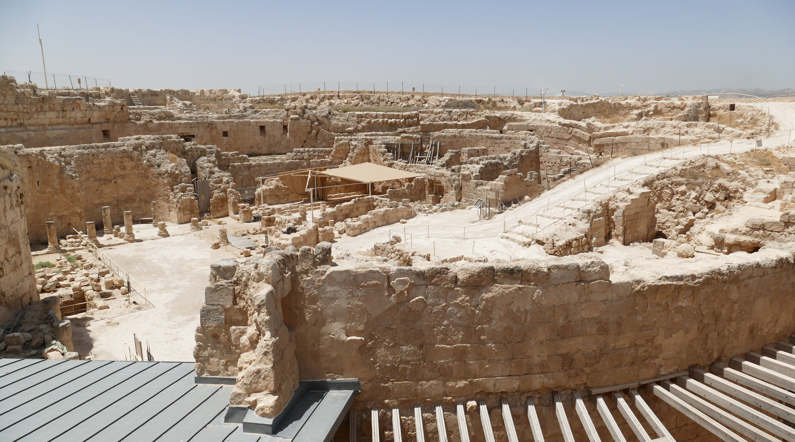
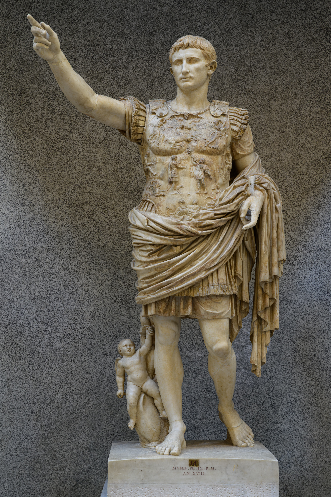

La independencia judía duró un siglo. Luego llegó Roma —y no se fue nunca—. En su Judea inquieta, gobernada por un rey brillante y sanguinario, germinó el mundo mesiánico del que brotaría el cristianismo.
El estado independiente que los Macabeos habían ganado se desgastó en luchas internas. Y donde hay división, Roma encontraba siempre su oportunidad. En el 63 a.C., el general romano Pompeyo intervino en las disputas judías y entró en Jerusalén. Comenzaba una relación de siglos que definiría el destino del judaísmo —y daría al mundo una nueva religión—.
La llegada de Roma tuvo un gesto inaugural cargado de simbolismo. Tras tomar Jerusalén, Pompeyo hizo algo que ningún gentil debía hacer: entró en el Sancta Sanctorum, el Santo de los Santos, la cámara más sagrada del Templo, donde solo el Sumo Sacerdote entraba una vez al año. Sentía curiosidad por ver qué guardaban los judíos en su misterioso santuario sin imágenes.
Lo que encontró lo desconcertó: una sala vacía. Ni ídolo, ni imagen, ni estatua. Solo un espacio oscuro y silencioso donde habitaba, invisible, el Dios de Israel. Pompeyo salió sin saquear —un raro gesto de contención—, pero el daño estaba hecho: Roma había violado el corazón sagrado del judaísmo, y esa herida definiría la relación durante los dos siglos siguientes. Judea se convirtió en un estado cliente de Roma.
Roma prefería gobernar a través de reyes títere locales. Su elección para Judea fue un personaje extraordinario y contradictorio: Herodes el Grande (37–4 a.C.). De origen idumeo (no plenamente judío a ojos de muchos), leal a Roma hasta la médula, fue a la vez un constructor genial y un tirano paranoico.
Como constructor, no tuvo rival: levantó fortalezas espectaculares (Masada, el Herodión), ciudades enteras (Cesarea), y sobre todo emprendió la ampliación monumental del Templo de Jerusalén, convirtiéndolo en una de las maravillas del mundo antiguo. Como tirano, fue implacable: ejecutó a su propia esposa, a tres de sus hijos y a incontables rivales, consumido por la sospecha. La tradición cristiana le atribuiría la "matanza de los inocentes".

El Templo de Herodes encarnaba la ambigüedad de la época: era una ofrenda al Dios de Israel, pero su arquitectura imitaba los templos imperiales dedicados a César Augusto, el emperador y "patrón divino" de Herodes. Judaísmo y poder romano, entrelazados en la piedra misma del lugar más sagrado.

La Judea romana era un polvorín espiritual. Bajo la ocupación y los impuestos, con un Templo grandioso pero gobernado por sacerdotes colaboracionistas, el pueblo bullía de tensión mesiánica: la esperanza de que Dios enviara un ungido (mesías) que expulsara a los romanos y restaurara el reino de Israel. Ese anhelo fragmentó al judaísmo en corrientes rivales:
Centrados en la Ley y su interpretación oral, creían en la resurrección y los ángeles. Su flexibilidad —la fe no dependía solo del Templo— les permitiría sobrevivir a lo que venía.
La aristocracia sacerdotal, ligada al Templo y colaboradora con Roma. Negaban la resurrección. Cuando el Templo cayera, desaparecerían con él.
Comunidades apartadas y ascéticas (probablemente los de los Rollos del Mar Muerto, de nuestra serie de los libros perdidos), que esperaban un fin del mundo inminente.
Los radicales de la resistencia armada, partidarios de expulsar a Roma por la fuerza. Su camino llevaría a la guerra y a la catástrofe del 70 d.C.
En este mundo hirviente —ocupación romana, esperanza mesiánica, sectas enfrentadas, un Templo magnífico y contestado— predicó un maestro galileo llamado Jesús de Nazaret. El cristianismo no nació en el vacío: brotó de esta Judea concreta, tensa y apocalíptica, bajo la sombra del águila romana.
Roma llegó en el 63 a.C. y gobernó Judea a través de reyes títere como Herodes, un constructor genial y un tirano cruel. Bajo la ocupación, el pueblo esperaba un mesías libertador, y el judaísmo se dividió en grupos rivales (fariseos, saduceos, esenios, zelotes). En ese mundo tenso y mesiánico nació el cristianismo.
Roma no fue un vecino más: fue el marco definitivo. A diferencia de los imperios anteriores, no se limitó a pasar: se instaló, y su presencia creó la presión exacta —política, económica, espiritual— de la que surgieron tanto el cristianismo como, tras la catástrofe, el judaísmo tal como lo conocemos hoy. Herodes y su Templo magnífico son el símbolo de esa era: esplendor y opresión, gloria y tensión, todo a la vez.
Pero esa tensión no podía sostenerse indefinidamente. La esperanza mesiánica, los zelotes, los impuestos, las provocaciones romanas: todo empujaba hacia una explosión. En la última entrega llega el estallido —la gran revuelta y el año en que el Templo ardió por segunda y última vez—.
La entrada de Pompeyo en Jerusalén y en el Templo (63 a.C.), el reinado de Herodes el Grande (37–4 a.C.), sus proyectos constructivos y la ampliación del Templo son hechos históricos firmes, documentados sobre todo por Flavio Josefo y por la arqueología (Masada, Herodión, Cesarea).
Las cuatro corrientes (fariseos, saduceos, esenios, zelotes) están atestiguadas por Josefo y otras fuentes, aunque su descripción exacta se debate y se simplifica aquí. La "matanza de los inocentes" es un relato del Evangelio de Mateo cuyo carácter histórico es discutido; se menciona como tradición, no como hecho establecido. La existencia histórica de Jesús de Nazaret como predicador galileo de esta época es consenso académico.
Este artículo describe el contexto histórico del nacimiento del cristianismo; no entra en cuestiones de fe, que quedan fuera de su alcance.